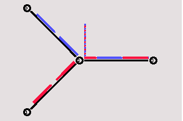

[Previous section] [Next section] [Back to the index]
In this section we are going to define a topology with four nodes in which one node acts as router that forwards the data that two nodes are sending to the fourth node. I will explain find a way to distinguish the data flows from the two nodes from each other, and I will show how a queue can be monitored to see how full it is, and how many packets are being discarded.
V.1. The topology
As always, the first step is to define the topology. You should create a
file 'example2.tcl', using the code
from section
IV.1 as a template. As I said before, this code will always be similar. You
will always have to create a simulator object, you will always have to start
the simulation with the same command, and if you want to run nam automatically,
you will always have to open a trace file, initialize it, and define a procedure
which closes it and starts nam.
Now insert the following lines into the code to create four nodes.
|
The following piece of Tcl code creates three duplex links between the nodes.
|
You can save and start the script now. You might notice that the topology looks a bit awkward in nam. You can hit the 're-layout' button to make it look better, but it would be nice to have some more control over the layout. Add the next three lines to your Tcl script and start it again.
|
Note that the autolayout related parts of nam are gone, since now you have taken the layout into your own hands. The options for the orientation of a link are right, left, up, down and combinations of these orientations. You can experiment with these settings later, but for now please leave the topology the way it is.
V.2. The events
Now we create two UDP agents with CBR traffic sources and attach them to the
nodes n0 and n1. Then we create a Null agent and attach it to node n3.
|
The two CBR agents have to be connected to the Null agent.
|
We want the first CBR agent to start sending at 0.5 seconds and to stop at 4.5 seconds while the second CBR agent starts at 1.0 seconds and stops at 4.0 seconds.
|
V.3. Marking flows
Add the following two lines to your CBR agent definitions.
|
Now add the following piece of code to your Tcl script, preferably at the beginning after the simulator object has been created, since this is a part of the simulator setup.
|

Now you can start the script again and one flow should be blue, while the other one is red. Watch the link from node n2 to n3 for a while, and you will notice that after some time the distribution between blue and red packets isn't too fair anymore (at least that's the way it is on my system). In the next section I'll show you how you can look inside this link's queue to find out what is going on there.
V.4. Monitoring a queue
You only have to add the following line to your code to monitor the
queue for the link from n2 to n3.
|

You can see the packets in the queue now, and after a while you can even see how the packets are being dropped, though (at least on my system, I guess it might be different in later or earlier releases) only blue packets are being dropped. But you can't really expect too much 'fairness' from a simple DropTail queue. So let's try to improve the queueing by using a SFQ (stochastic fair queueing) queue for the link from n2 to n3. Change the link definition for the link between n2 and n3 to the following line. |

You can download the full example here.
[Previous section] [Next section] [Back to the index]
ns-users